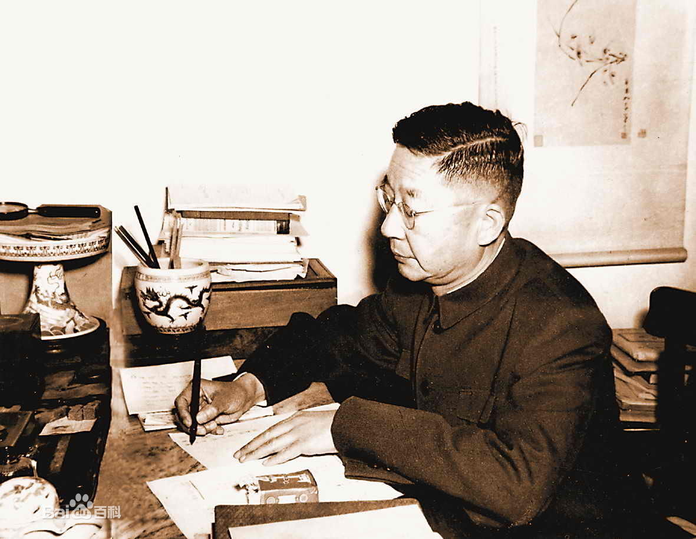

老舍：文化抗战阵地上的不屈旗手

抗日战争期间，中国知识分子和文化学者以笔为剑、以文为戈，在文化战线和思想战场上与侵略者展开激烈斗争。他们或投笔从戎，或著书立说，或奔走呼号，为民族救亡作出了不可磨灭的贡献。 老舍（1899—1966），原名舒庆春，是中国现代文学巨匠，也是抗战期间文化界抗战的旗帜性人物。他以笔为枪，用文字和行动投身民族救亡运动，展现了知识分子在国难中的担当。 1937年卢沟桥事变爆发时，老舍正在英国伦敦大学东方学院任教，生活安稳。1937年11月，他毅然中断教职，告别妻儿，只身回国。 途经新加坡时，他短暂停留，在当地报刊发表《五四之夜》等文章，痛斥日军暴行，鼓舞华侨抗战。1938年3月，老舍抵达武汉，与郭沫若、茅盾等共同发起成立中华全国文艺界抗敌协会" ，在《入会誓词》中写道:"我是文艺界的一名小卒，但小卒也要死在战场上!" 老舍在抗战期间创作了300多万字作品，涵盖小说、话剧、鼓词、快板等多种形式:《四世同堂》(1944-1948)描写北平沦陷区普通人的抗争，祁瑞宣的挣扎与觉醒象征民族意识的复苏。书中钱默吟老人说:"我们须用血肉和灵魂抵挡住侵略，教子孙知道中国不会亡!《火葬》(1944)直接描写抗日游击队的战斗，是老舍少有的战争题材小说。 1938-1946年，老舍随"文协"辗转武汉、重庆等地，生活极度困苦。住在重庆北碚的破旧农舍，称"多鼠斋"，营养不良却坚持写作;患严重贫血和疟疾，仍熬夜编《抗战文艺》。稿费多用于资助流亡作家，自己常靠借贷度日。1944年，日军发动"一号作战"，重庆震动。老舍在《八方风雨》中回忆:"敌机来了，我抱着稿子钻防空洞;敌机走了，爬出来继续写。炸得越狠，越要写下去!1946-1949年，老舍赴美讲学期间，仍致力于抗战宣传，英文版《四世同堂》(《The Yellow Storm》)在美出版，让西方了解中国民众的抵抗，他在哥伦比亚大学演讲时强调:"中国人民的抗战不仅是自卫，更是为世界反法西斯而战。 老舍用生命践行了这句话——他不仅是"人民艺术家"，更是抗战文化战线上一名真正的战士。